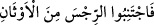
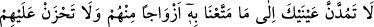
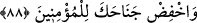

indirdi.” (ez-Zümer, 39/23) buyurmuştur. el-Kevâşî’de geçtiği üzere Kur’an’da vaad-
vaîd; emir-yasak, mükâfât-cezâ ve kıssalar tekrarlandığı için “mesânî (tekrarlanan)”
diye vasfedilmiştir.
“Ve yüce Kur’an’ı verdik.” Sana verdiğimiz diğer şey de nezdimizde kadr ü kıymeti
oldukça büyük olan ve sevâbı pek fazla olan yüce Kur’ân’dır.
Âyet, bir bütünün (yâni Kur’ân’ın) parçasına -yâni yediye- atfı kabîlindendir. “Min”
harfinin açıklama için olması ve “yedi”nin “tekrarlanan” olması da câizdir. Tıpkı, “
Fectenibü’r-ricse mine’l-evsân; O halde pislikten ibaret olan putlardan kaçının”
(el-Hac, 22/30) âyetinde olduğu gibi.
Fâtiha sûresi, her namazda tekrar tekrar okunduğu, namazda kendisine zammedilen
sûre ve âyetlerle birlikte ikilenmiş (müsennâ) olduğu için ‘mesânî’ adını almıştır.
Ayrıca sûrenin ilk yarısı kulun Rabbini senâ etmesine, diğer yarısı ise Rabbin kuluna
verdiği nîmetlere ayrılmıştır. Bu îzâhı, Hz. Peygamber (a.s.)’ın Ebû Saîd (Hudrî)’ye
söylediği şu sözler de te’yid etmektedir: “Sana öyle bir sûre öğreteceğim ki o
Kur’an’daki en büyük sûredir.” Ebû Saîd (r.a.): “O hangi sûredir?” diye sordu. Hz.
Peygamber (s.a.): “el-Hamdü lillâhi Rabbi’l-âlemîn’dir. Bana verilen ‘tekrarlanan
yedi ve büyük Kur’an’ işte odur.”[90] Bu hadis, Kur’an lafzının Kur’an’ın bir bölümü
için de kullanılabileceğine delâlet eder.
Fethu’l-karîb’de şöyle der: Kur’an lâfzının es-seb‘u’l-mesânî’ye atfedilmesi, bir
şeyin kendisine atfı kabîlinden değildir. Sâdece bir şeyin iki vasfı ile zikredilirken
birinin ma‘tûf (atfedilen), diğerinin ma‘tûfun aleyh (kendisine atfedilen) olması
kabilindendir. Yâni, bu şey her iki vasfı da taşımaktadır.
Fakir (Bursevî) der ki: Fâtiha sûresi, Kur’an’daki hakîkatleri kapsamak bakımından
Kur’ân bölümlerinin en büyüğü olduğundan onun hakkında “Kur’an” denilmesi sahih
olmaktadır. Fâtiha’nın mesânî (tekrarlanan) olmasına gelince, bu da her rek’atta
tekrarlanması bakımındandır. Ancak tekrarlanma özelliğinin Kur’ân’ın özelliklerinden
olması îtibârıyla Fâtiha’nın ‘tekrarlanan’ diye isimlendirilmiş olması da tamâmen
ihtimâl dışı değildir. Cüz/parça sanki bütün gibi olduğunda bütüne âid vasıflarla
vasfedilmesi doğru olur.
88. Sakın onlardan bazı sınıflara verdiğimiz dünyâ malına göz dikme, onlardan
dolayı üzülme ve mü’minlere alçak gönüllü ol.
“Sakın onlardan” kâfirlerden yahûdî, hristiyan, mecûsî ve putperest gibi “bazı
sınıflara verdiğimiz dünyâ malına” dünyânın süsüne, ziynetine, güzelliklerine ve